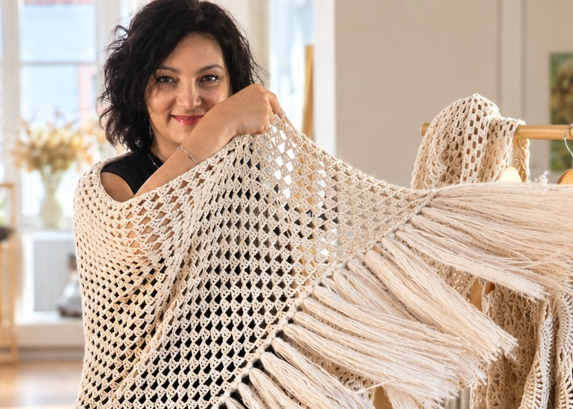

À propos
Chi sono
Ma passion pour la savonnerie artisanale m'accompagne depuis 2019.
La mia passione per la saponeria artigianale mi accompagna dal 2019.
Elle est née loin du bruit, dans la campagne française, entre Beauce et Perche.
È nata lontano dal rumore, nella campagna francese, tra la Beauce e il Perche.
C'est là que quelque chose s'est éveillé. Le contact avec la terre, les matières naturelles, les gestes simples, les silences et le temps qui prend son temps.
È lì che qualcosa si è risvegliato. Il contatto con la terra, le materie naturali, i gesti semplici, i silenzi e il tempo che prende il suo tempo.
Italienne devenue aussi française, je porte en moi un profond attachement aux terroirs, aux traditions populaires et aux savoir-faire transmis de génération en génération.
Italiana diventata anche francese, porto in me un profondo attaccamento ai territori, alle tradizioni popolari e ai saperi tramandati di generazione in generazione.
Au fil des années, l'envie de transformer la matière a pris différentes formes. D'abord les savons et les soins cosmétiques, élaborés avec patience et exigence. Puis le plâtre, cette matière minérale, humble et fascinante, que je façonne en objets décoratifs inspirés par la nature.
Nel corso degli anni, il desiderio di trasformare la materia ha preso forme diverse. Prima i saponi e i cosmetici naturali, elaborati con pazienza ed esigenza. Poi il gesso, quella materia minerale, umile e affascinante, che modello in oggetti decorativi ispirati dalla natura.
Deux univers, une même intention : travailler de mes mains, explorer les matières, retrouver la beauté des gestes anciens et leur donner une place dans notre quotidien.
Due universi, un'unica intenzione : lavorare con le mie mani, esplorare le materie, ritrovare la bellezza dei gesti antichi e dar loro un posto nel nostro quotidiano.
J'aime ce dialogue entre le végétal et le minéral, entre les traditions et la création, entre ce que la nature nous offre et ce que nos mains peuvent en faire.
Amo questo dialogo tra il vegetale e il minerale, tra le tradizioni e la creazione, tra ciò che la natura ci offre e ciò che le nostre mani possono farne.
Sylfay est née de cette envie : faire vivre un artisanat sincère, célébrer la beauté des choses simples et glisser un soupçon de magie dans les petits rituels du quotidien.
Sylfay è nata da questo desiderio : far vivere un artigianato sincero, celebrare la bellezza delle cose semplici e infilare un pizzico di magia nei piccoli rituali quotidiani.
Un univers où la nature inspire, où les matières se transforment et où chaque création raconte, à sa manière, une histoire de terre, de gestes et de temps.
Un universo dove la natura ispira, dove le materie si trasformano e dove ogni creazione racconta, a modo suo, una storia di terra, di gesti e di tempo.
Bienvenue dans l'univers Sylfay
Benvenuta nell'universo Sylfay